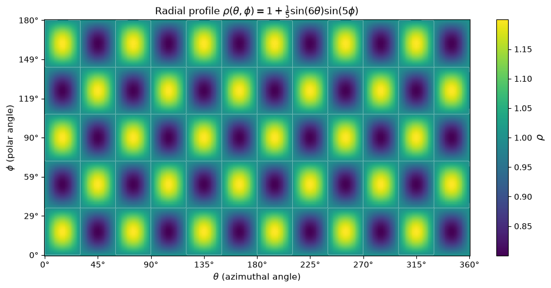

Please solve the problem in the following image.
(Image `20260929_203006_587705_utc_0800_0.png`. Alt text: Image: human_20260929_203006_587705_utc_0800)

20260929_203006_587705_utc_0800_0.png
End of problem
Answer
## Setting Up the Triple Integral
In spherical coordinates, the volume enclosed by a surface $\rho = \rho(\theta, \phi)$ is
$$
V=\int_{0}^{2\pi}\!\!\int_{0}^{\pi}\!\!\int_{0}^{\rho(\theta,\phi)} \rho^{2}\sin\phi \,d\rho\,d\phi\,d\theta.
$$
With $\rho(\theta,\phi)=1+\tfrac{1}{5}\sin 6\theta\,\sin 5\phi$, integrate first in $\rho$:
$$
V=\frac{1}{3}\int_{0}^{2\pi}\!\!\int_{0}^{\pi} \Bigl(1+\tfrac{1}{5}\sin 6\theta\sin 5\phi\Bigr)^{3}\sin\phi \,d\phi\,d\theta.
$$
pyplot_1.png
The picture above (the bumpy sphere with 6 azimuthal bumps and 5 polar rings) is what we are trying to find the volume of.
## Expanding the Cube
Let $s=\tfrac{1}{5}\sin 6\theta\,\sin 5\phi$. Then $(1+s)^{3}=1+3s+3s^{2}+s^{3}$, so
$$
V=\frac{1}{3}\int_{0}^{2\pi}\!\!\int_{0}^{\pi}\!\!\bigl[1+3s+3s^{2}+s^{3}\bigr]\sin\phi\,d\phi\,d\theta.
$$
The radial profile (showing the 6 × 5 bump pattern) is:
pyplot_heatmap.png
## Evaluating Each Term
The four integrals separate because $\theta$ and $\phi$ appear in independent factors.
**Term 0 (constant):** Trivially,
$$
\int_{0}^{2\pi}\!\!\int_{0}^{\pi}\sin\phi\,d\phi\,d\theta=2\pi\cdot 2=4\pi.
$$
**Term 1 (linear in $s$):** $\displaystyle\int_{0}^{2\pi}\sin 6\theta\,d\theta=0$, so this term vanishes.
**Term 2 (quadratic in $s$):** This is the only nonzero correction. Compute the two factors separately.
$$
\int_{0}^{2\pi}\sin^{2}6\theta\,d\theta=\frac{1}{2}\int_{0}^{2\pi}(1-\cos 12\theta)\,d\theta=\pi.
$$
For the $\phi$-factor, use $\sin^{2}5\phi=\tfrac{1}{2}(1-\cos 10\phi)$ and $\cos A\sin B=\tfrac{1}{2}[\sin(A+B)-\sin(A-B)]$:
$$
\int_{0}^{\pi}\sin^{2}5\phi\sin\phi\,d\phi=\underbrace{\frac{1}{2}\!\int_{0}^{\pi}\!\sin\phi\,d\phi}_{=\,1}\;-\;\frac{1}{2}\!\int_{0}^{\pi}\!\cos 10\phi\sin\phi\,d\phi.
$$
The second integral equals $\tfrac{1}{2}\bigl(\tfrac{2}{11}-\tfrac{2}{9}\bigr)=-\tfrac{2}{99}$, so
$$
\int_{0}^{\pi}\sin^{2}5\phi\sin\phi\,d\phi=1+\frac{1}{99}=\frac{100}{99}.
$$
Combining: $\displaystyle 3\int_{0}^{2\pi}\!\!\int_{0}^{\pi}s^{2}\sin\phi\,d\phi\,d\theta=3\cdot\frac{1}{25}\cdot\pi\cdot\frac{100}{99}=\frac{4\pi}{33}.$
**Term 3 (cubic in $s$):** Since $\sin^{3}6\theta=\tfrac{1}{4}(3\sin 6\theta-\sin 18\theta)$, integrating over a full period gives $0$.
## Combining
$$
V=\frac{1}{3}\!\left[4\pi+0+\frac{4\pi}{33}+0\right]=\frac{1}{3}\cdot\frac{132\pi+4\pi}{33}=\frac{136\pi}{33\cdot 3}=\frac{136\pi}{99}.
$$
$$
\boxed{\,V=\dfrac{136\pi}{99}\approx 4.3157\,}
$$
**Sanity check (Monte Carlo, 5×10⁶ samples):** $V\approx 4.3147$, agreeing with the exact value to 0.025%. A unit sphere ($s\equiv 0$) has volume $\tfrac{4\pi}{3}\approx 4.1888$, so the bumps add about $0.127$ to the volume — exactly the size of the quadratic correction $\tfrac{4\pi}{99}\approx 0.127$.
---